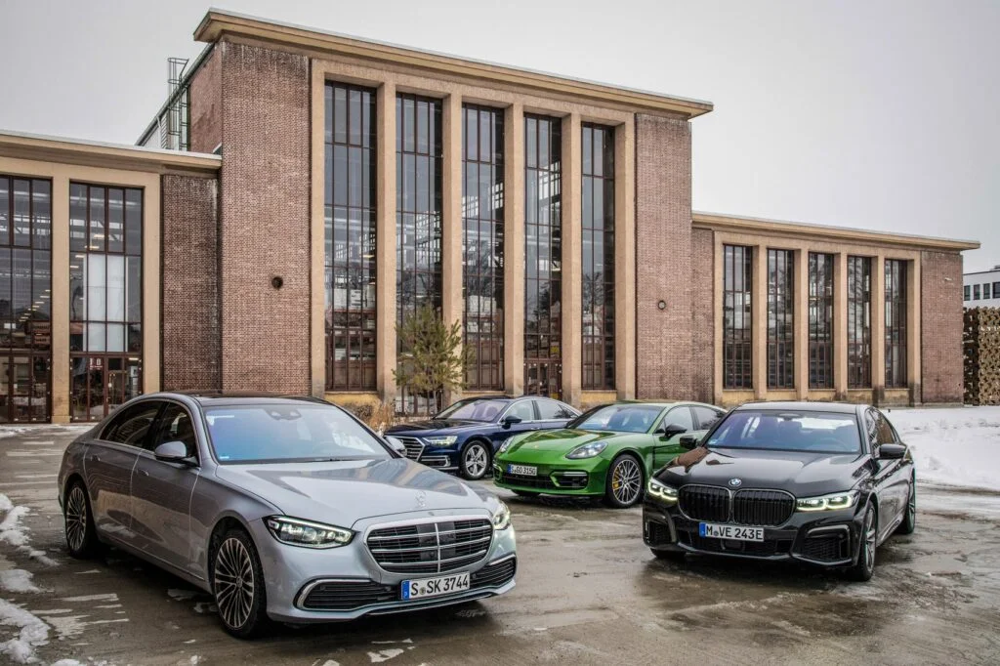

¡Datos Curiosos!
Fabricantes alemanes como Volkswagen, BMW, Mercedes-Benz y Porsche participaron en la producción de vehículos militares durante la Segunda Guerra Mundial

¡Datos Curiosos!
Es el país con más zoológicos, con más de 400 jardines zoológicos e instalaciones de vida salvaje
¡Datos Curiosos!
Alemania produce un tercio de las 15.000 variedades de cerveza que existen en el mundo!